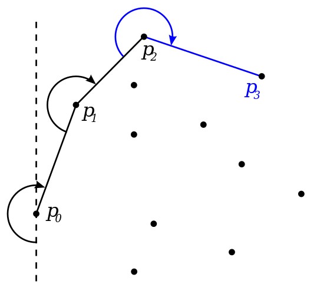

Jarvis March: The Gift Wrapping Analogy
Picture this: You have a bunch of nails sticking out of a board. You want to tightly wrap a present using these nails as anchor points.
The process:
- Start at the nail furthest to the left (you can always find this one).
- Imagine pulling a string taut from this nail. Rotate the string around like a clock hand until it catches on the next nail as if you were wrapping the present.
- Move to this new nail, and repeat the string process.
- Keep "wrapping" until you're back where you started.
The key idea: Each time you rotate the string, you find the next point that must form the outer boundary of any wrapping. This makes the Jarvis March a bit like brute force: it checks most points but in an organized way.
Understanding the Algorithm
- Finding the Starting Point (Leftmost Point)
- Imagine a set of points scattered on a plane. The Jarvis March algorithm starts by finding a special point that's guaranteed to be on the convex hull (the outermost boundary).
- This special point is the one with the smallest x-coordinate. In simpler terms, it's the point that's furthest to the left when you look at them on a graph.
- Building the Hull One Point at a Time
- Let's call the leftmost point currentPoint. We'll use this point as a reference to find the next point on the convex hull boundary.
- We initialize an empty list called hull to store the points that will form the convex hull.
- Finding the Next Point on the Hull
- To find the next point on the hull, we iterate through all the points in the set (S).
- For each point p in the set, we need to determine its position relative to the line segment formed by currentPoint and another point called endpoint.
- Checking Orientation: Counter-Clockwise is Key
- Here's the crucial part: we use a helper function called ORIENTATION(currentPoint, p, endpoint) to determine the orientation of three points.
- This function tells us whether points p and endpoint lie on the left, right, or directly on the line formed by currentPoint and endpoint. 
- Selecting the Best Candidate
- There can be multiple points that are counter-clockwise to the line segment formed by currentPoint and endpoint.
- We need to choose the one that's furthest away from currentPoint. This ensures we're truly following the outer boundary of the convex hull.
- Adding the Point and Moving On
- Once we've iterated through all points and found the best candidate (endpoint), we've essentially identified the next point on the convex hull boundary.
- We add this point (endpoint) to the hull list, which is keeping track of the convex hull points so far.
- Repeating Until We're Back at the Start
- The process of finding the next counter-clockwise point furthest away, adding it to the hull, and updating currentPoint continues until we reach a special condition.
- We keep iterating as long as currentPoint is not the same as the very first leftmost point we picked initially.
- Completing the Convex Hull
- By following these steps, we essentially "wrap" around the set of points, adding points to the hull in a counter-clockwise manner until we reach the starting point again.
- This final list stored in hull represents the complete set of points that form the convex hull of the original set S.
Time Complexity of the Algorithm
- Initialization:
- Let n be the number of points in the input set P. The algorithm starts by selecting the leftmost point in P as the starting point of the convex hull. This step takes O(n) time since it involves scanning through all points once.
- Looping through Points:
- a. Loop Iterations: In each iteration of the loop, the algorithm examines all points in P to find the next point on the convex hull. This involves comparing the angles formed by the current point and all other points. Since there are n points, this step takes O(n) time.
- b. Angle Computation: Computing the angle between the current point and every other point requires constant time for each comparison. Hence, it takes O(1) time per comparison.
- c. Total Time per Iteration: The total time for each iteration of the loop is O(n) * O(1) = O(n).
- Overall Time Complexity:
- Let h be the number of points on the convex hull. Since each point is visited only once during the construction of the convex hull, and the number of points on the convex hull is generally much smaller than the total number of points (h ≤ n), the overall time complexity of the Jarvis March algorithm is O(nh).
- Worst-case Scenario:
- In the worst-case scenario, where all points are on the convex hull (h = n), the time complexity becomes O(n^2). This occurs, for example, when the points are arranged in a straight line.
- Average-case Scenario:
- In the average case, the time complexity is better than O(n^2) but still depends on the distribution of points. On average, it tends to be closer to O(nh).